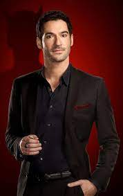
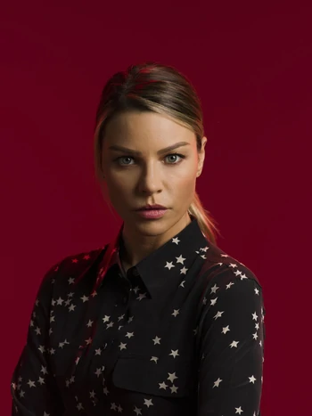
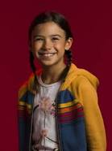

A série se desenvolve ao redor de Lucifer Morningstar, que está entediado e infeliz como o Senhor do Inferno. Ele renuncia seu trono e abandona seu reinado para tirar férias em Los Angeles, onde dá início a uma casa noturna com a ajuda de sua aliada demoníaca, Mazikeen Smith. Depois que uma celebridade a quem Lucifer ajudou a alcançar a fama é assassinada, ele se envolve com a polícia de Los Angeles, onde começa a trabalhar com a Detetive Chloe Decker, e resolver casos de homicídio, para assim, encontrar os responsáveis, e "puní-los".
◊ Elenco e Personagens ◊
• Tom Ellis •

Atua como Lucifer Morningstar: O Senhor do Inferno, que está entediado com sua vida, renuncia seu trono e torna-se um consultor civil do Departamento de Polícia de Los Angeles, enquanto gerencia sua própria boate de luxo chamada "Lux".
• Lauren German •

Atua como Chloe Decker: Como seu pai no passado, ela é uma detetive de homicídios do Departamento de Polícia de Los Angeles. Ela resolve crimes com Lucifer depois que ele se interessa por ela, uma vez que ela parece ser imune às suas habilidades.
• Kevin Alejandro •
Atua como Daniel "Dan" Espinoza: Um detetive de homicídios do Departamento de Polícia de Los Angeles e ex-marido de Chloe.
• Lesley-Ann Brandt •
Atua como Mazikeen Smith: A aliada confidente e leal de Lucifer Morningstar, abreviada como "Maze". Ela é um demônio que, tendo sido sua torturadora principal, o seguiu do inferno para Los Angeles, e atuou como garçonete e guarda-costas na boate de Lucifer. Na segunda temporada, Maze procura uma nova direção na Terra e se torna caçadora de recompensas.
• D. B. Woodside •
Atua omo Amenadiel: Um anjo, o irmão mais velho de Lucifer, e o mais velho de todos os seus irmãos. Ele chega em Los Angeles para encorajar Lucifer a voltar para o inferno e, ao falhar nisso, tenta obrigar Lucifer a voltar de maneiras diferentes.
• Scarlett Estevez •

Atua como Beatrice "Trixie" Espinoza: A filha de nove anos de Chloe e Dan, que faz amizade com Lucifer, Mazikeen e Amenadiel.
• Rachael Harris•
Atua como Dr. Linda Martin: A psicoterapeuta formada em Stanford de Lucifer.
• Aimee Garcia •
Atua como Ella Lopez: Uma cientista forense do Departamento de Polícia de Los Angeles.
◊ Lançamento ◊
O primeiro episódio, "Pilot", foi emitido na noite de 25 de janeiro de 2016 e foi assistido por 7.16 milhões de telespectadores, um número ótimo para uma estreia de série. Os episódios seguintes também não decepcionaram a nível de audiência. No dia 7 de abril de 2016, a emissora Fox garantiu a série uma renovação para uma segunda temporada.
◊ Curiosidades ◊
• Antes das gravações da série começarem, Tom Ellis tentou entonar um sotaque americano para o seu papel. Mas o resultado não ficou legal. Então, o ator teve a liberdade de usar todo o seu sotaque britânico para compor o personagem. A razão pela qual ele escolheu o sotaque inglês é que ele pensou que Lucifer parecia um idiota.
• Cada episódio de Lucifer tem um nome único e praticamente todos os episódios da série são referências a alguma fala de um personagem – geralmente, dita pelo próprio Lucifer.
• A série Lucifer é, na verdade, baseada no personagem Lúcifer Morningstar da DC Comics – a mesma editor que publica as histórias de Batman e Superman. O nome do quadrinho no qual esta série é baseada chama-se Sandman.
• Tom Ellis (Lucifer), Lauren German (Chloe) e Aimee Garcia (Ella) tem todos, praticamente, a exata mesma idade, sendo separados por dias. Eles nasceram, respectivamente, em 17 de novembro de 1978, 29 de novembro de 1978 e 28 de novembro de 1978, tendo atualmente 41 anos.